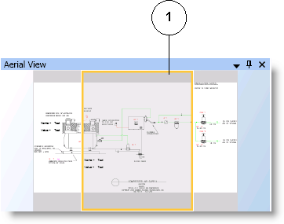

Aerial View
The Aerial view allows you to view the drawing board and the canvas at all times. You can zoom in and out of a specific area and pan around the drawing area with the viewport.

Aerial View | ||
| Name | Description |
1 | Viewport Rectangle | View graphics in part or as a whole. |
Related Topics
For related procedures, see the following:
- Aerial View.
- Arranging Views and Dock Panel Placement.
For background information, see Views and Dock Panel.